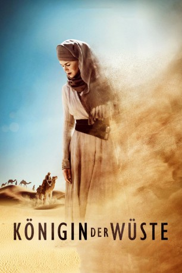
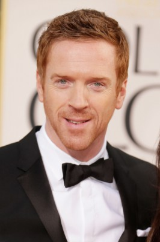
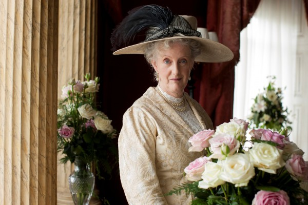
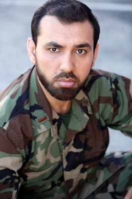

#4064 Königin der Wüste
Alternativ: Queen of the Desert
 
 IMDB-Wertung: 5.6 / 10
IMDB-Wertung: 5.6 / 10  Metascore: 0
Metascore: 0 
Statt ihr Leben Heim und Familie zu widmen, zieht es die gebildete Engländerin Gertrude Bell in den Nahen Osten nach Teheran. Überwältigt von der Natur und der Kultur des fremden Landes verliebt sie sich in den Diplomaten Henry Cadogan. Doch ein tragisches Unglück zerstört ihre Pläne für eine gemeinsame Zukunft. Getrieben von der Einsamkeit und dem Wunsch zu vergessen, widmet sie ihr Leben fortan den Menschen des Orients und der arabischen Kultur. Sie macht sich als Schriftstellerin, Archäologin und Forscherin einen Namen, um letztendlich als politische Beraterin und Spionin des britischen Königreichs zu einer der mächtigsten Frauen ihrer Zeit zu werden.
Jahr: 2015
Dauer: 128 Minuten
FSK: 0
Land: USA Studio: IFC FilmsTonspuren: DTS - ,
Untertitel: Deutsch,
Auflösung: 1080p (1920x804) Größe: 7864 MB
Genre: Biographie, Drama, Geschichte, Liebe
Regisseur:  Werner Herzog
Werner Herzog
Drehbuch: Jeff Maguire
Soundtrack:
Darsteller:
 James Franco als Henry Cadogan
James Franco als Henry Cadogan Nicole Kidman als Gertrude Bell
Nicole Kidman als Gertrude Bell Robert Pattinson als Col. T.E. Lawrence
Robert Pattinson als Col. T.E. Lawrence-  Damian Lewis als Charles Doughty-Wylie
 Jenny Agutter als Florence Bell
Jenny Agutter als Florence Bell- Holly Earl als Florence Lascelles
 Beth Goddard als Aunt Lascelles
Beth Goddard als Aunt Lascelles David Calder als Hugh Bell
David Calder als Hugh Bell Christopher Fulford als Winston Churchill
Christopher Fulford als Winston Churchill Mark Lewis Jones als Frank Lascelles
Mark Lewis Jones als Frank Lascelles- Jay Abdo als Fattuh
 Assaad Bouab als Sheik
Assaad Bouab als Sheik- Renee Faia als
- Anas El Baz als Horseman
-  Sarah Crowden als Lady Ascot
 Michael Jenn als R. Campbell Thompson
Michael Jenn als R. Campbell Thompson- Christina Low als Handmaiden
- Sophie Linfield als Judith Doughtie-Wylie
-  Mustafa Haidari als Farsi voice actor
- William Ellis als Earl of Chester
- Ismael Kanater als Dulaim
- Fehd Benchemsi als Ibrahim
 John Wark als Arnold Runcie
John Wark als Arnold Runcie- Nick Waring als Sir Mark Sykes
- Charlie Hollway als Hairdresser
- Ayoub Layoussifi als King Abdullah
- Younes Benzakour als Abdullah
- Nick N. Raslan als Shop Owner
- Younes Bouab als King Faycal
- Fatima ezzahra El Jaouhari als Turkiyyeh
- Anas Chrifi als Emir
- Moustaati Hamza als Omar
- Colin Goodwin als The General
- Peter Stevenson als The Colonel
Datei: X:\2015(G-M)\Königin der Wüste (2015, FSK0, 1920x804).mkv seit 18.07.2016
Festplatte: HD 2015(A-Z)
 Es gibt insgesamt 129 Filme in der Gruppe '2015(G-M)'
Es gibt insgesamt 129 Filme in der Gruppe '2015(G-M)'